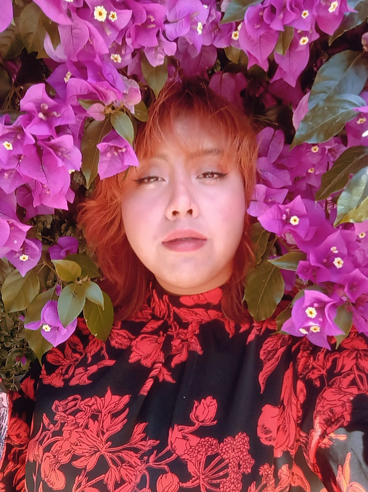

|  |
Fátima Mejía García, nacida el 29 de octubre en Apizaco, es una persona determinada y perseverante. Su viaje educativo comenzó en el kinder, donde enfrentó desafíos en su infancia, pero siempre demostró una gran fortaleza y ganas de aprender. En la primaria, Fátima canalizó su energía y dedicación en sus estudios, enfrentando tanto los desafíos académicos como las dificultades en el entorno familiar. A pesar de las adversidades, ella se esforzó continuamente y nunca dejó de luchar por sus metas. El paso a la secundaria, específicamente a la Escuela Secundaria Técnica #14. A medida que avanzaba en la secundaria, sus resultados académicos se destacaron y demostró su dedicación al obtener las mejores calificaciones. Posteriormente, Fátima ingresó a la preparatoria CeCyTE 23 de Texcalac, donde demostró una vez más su esfuerzo y determinación para obtener mejores promedios en sus estudios. Su dedicación y compromiso se reflejaron en su búsqueda constante de un mejor rendimiento académico. Actualmente, Fátima se encuentra en la etapa final de su formación universitaria en el Tecnológico de Apizaco. Sus últimos años en la universidad están llenos de desafíos y metas por alcanzar, pero su pasión por aprender y su perseverancia la guían hacia el éxito y la graduación. |
|
|
|
Las mascotas de Omar Mejia Garcia son algo importantes para el es como tener un segundo amigo ya que apesar de todo el siempre se divierte, y es muy alegre apesar de que hacen maldades sus mascotas el los igue queriendo, y sus nombres son: isis la gata mas vieja de todos 8 años humanos, Nime de todos la mas tragona, Vaca la que parece vaca, tigrena es muy timida ante todo, el wafles lo encontro en la calle y ahora es perte de su familia y por ultimo tenemos al amigo leal es pifas con quien pasa mucho tiempo jugando. |